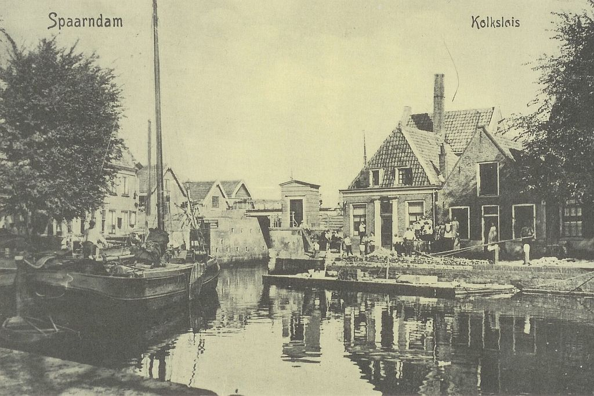
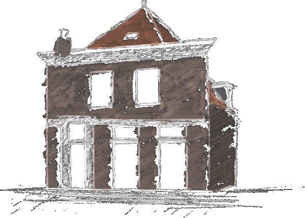
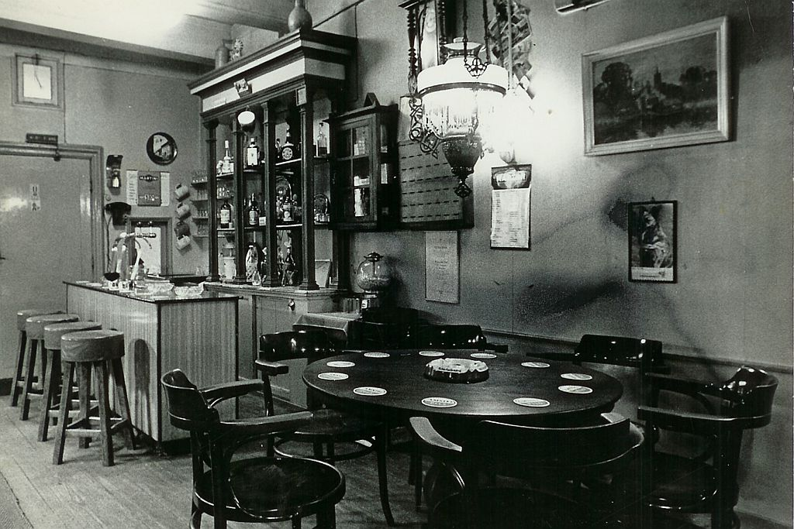
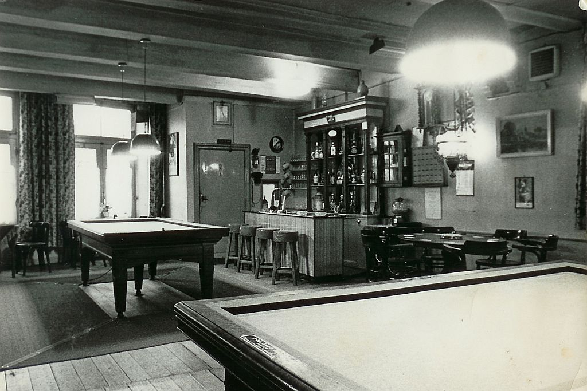

Westkolk 10, Spaarndam
Het oudste café van Kennemerland
Al sinds 1571 een herberg aan de Kolksluis. Vijf dagen per week open voor borrel en diner, met veel huisgemaakte snacks en maaltijden.
Een warm en gastvrij café
Aan de oudste sluis van Europa staat ons café: een plek om te lunchen, te borrelen, te darten of uitgebreid te eten. Herkenbaar met een twist, dat geldt voor de avondkaart, de broodjes en de snacks.
Ook de ideale plek voor uw borrel of feest. Voor gezelschappen gaan we in overleg graag afwijkend open.

- Wo t/m za
- vanaf 15:00
- Zondag
- vanaf 12:00
- Ma en di
- gesloten
Eten & drinken
Onze menukaart is precies wat je mag verwachten op zo'n mooie plek. Prijzen in euro's.
Dinerkaart

Borrel

Soep
Broodjes
Zoet
Voor gereserveerde gezelschappen bieden we vrijwel alles wat je wenst, niets is te gek.
Meer over gezelschappenWarme drank
Wij schenken Manetti koffie. Alle soorten, maten, smaken en franjes kunnen worden verzorgd.
Koude drank
- Coca Cola, regular en zero
- 7-up, Fanta orange
- Rivella
- Chaudfontaine blauw en rood
- Ice Tea
- Fever-Tree tonic, Indian en Elderflower
- Ginger Beer en Ginger Ale
- Appelsap, sinaasappelsap
- Chocomel
- Limonade
Wijn per glas of fles
- Wit Rueda, Chardonnay, Pinot Grigio
- Rood Cabernet Sauvignon, Shiraz
- Rosé Grenache blend
- Bubbels Cava Clos Amador 20 cl en 75 cl
Binnenlands
- Ketel 1 jonge jenever
- Zuidam jonge jenever
- Zuidam oude jenever
- Parade vieux
- Beerenburg
Buitenlands
- Vodka
- Bacardi lemon
- Bacardi carta blanca, oakheart
- Tequila
- Jägermeister
- Salmari
- Cognac
- Campari
Likeur
- Malibu, Amaretto, Tia Maria
- Baileys, Licor 43, Sambuca
- Kahlua, Limoncello
Whisky & bourbon
- Jameson Irish Whiskey
- Famous Grouse
- Buffalo Trace
- Monkey Shoulder
Cocktails
Vraag naar onze cocktailkaart, of daag ons uit.
Woensdaghappen
elke woensdag 13,75
- Kip-kerrie met rijst en doperwten
- Andijviestamppot met kaantjes en zuur
- Surinaamse rôti
- Hachee met rode kool & puree
- Erwtensoep maaltijd
- Kip Yakitori met gele rijst
- Indiase linzenschotel met knoflook naan
- Braadworst zigeunersaus, puree en groenten
- Bami met saté, kroepoek en ei
- Hachee met rode kool en puree
- Thaise wok-noedels met kip en veel groenten
- Hamburger Spaarndam met frites
- Gehaktballetjes in tomatensaus met spaghetti
- Goulash met witte rijst
- Penne kip-pesto met salade
- De lekkerste lasagne van de wereld
- Marokkaanse couscous met groenten, rozijnen & yoghurt
- Kip à la Bonne femme
- Turkse köfte met frites, salade & yoghurtsaus
- Procureur uit de oven, aardappeltjes en groenten
- Kip à la Bonne femme (champ, wortel, ui, truffel)
- Krokante kipburger met koolsla en frites
Paling, de klassieker van het palingdorp
Spaarndam staat bekend als hét palingdorp van Nederland. Die geschiedenis gaat terug tot de 19e eeuw: dankzij de natuurlijke verbindingen met de Zuiderzee, en later het IJ en het Noordzeekanaal, speelde het dorp een centrale rol in de palinghandel.
Die traditie houden we levend met onze 'hofleverancier' Holland Paling, een rokerij die sinds 1832 paling bereidt volgens authentieke methodes: gerookt boven Europees eikenhout, met uitsluitend natuurlijke ingrediënten.
Onze palinggerechten
Combineer het met een wandeling door het dorp: rond de oudste sluis van Europa, langs het Hansje Brinker-standbeeld, het historische gemaal en de forten van de Stelling van Amsterdam.
Bijna vijf eeuwen aan de kolk
Volgens de stadsarchieven van Haarlem was er al in 1571 een horecagelegenheid op het adres waar nu Café Spaarndam zit.
-
1571
Een herberg aan de Kolksluis, toen een belangrijk deel van de handelsroute: Spaarndam had nog een open verbinding met de Noordzee.
-
Vroeger
Alleen het voorgedeelte was café, met een grote haard in het midden en daarachter het woongedeelte. Na een grondige verbouwing werd de hele benedenverdieping café.
-
19e eeuw
De familie Van der Putte heeft het café bijna 100 jaar in handen.
-
Daarna
Henk Hoogland zwaait 30 jaar lang als uitbater de scepter.
-
Jaren 80
Bij een grote verbouwing wordt de vloer vervangen. De fundering blijkt op koeienhuiden te staan, een bouwmethode uit de 14e eeuw.
-
1991 & 1999
Leon begint als barman en neemt het café in 1999 over. Met zijn vrouw Yvette runt hij het tot het met Kerstmis 2022 sluit.
-
Juni 2023
Heropend, en met veel enthousiasme voortgezet door Kees Heger en Maarten Benjamins. We kijken uit naar wat nog komen gaat.


Uw borrel of feest bij ons
Een verjaardag, een vergadering in het atelier of een feest met het hele team: voor gereserveerde gezelschappen bieden we vrijwel alles wat je wenst, niets is te gek. En we gaan in overleg graag afwijkend open.
Mail voor meer informatie met Kees Heger en Maarten Benjamins.
Kom langs
Café SpaarndamWestkolk 10
2063 JR Spaarndam
Openingstijden
| Maandag | Gesloten |
|---|---|
| Dinsdag | Gesloten |
| Woensdag | Vanaf 15:00 |
| Donderdag | Vanaf 15:00 |
| Vrijdag | Vanaf 15:00 |
| Zaterdag | Vanaf 15:00 |
| Zondag | Vanaf 12:00 |
Voor gezelschappen gaan wij, in overleg, graag afwijkend open.
In de omgeving
- De oudste sluis van Europa ligt voor de deur. Stichting Kolksluis Spaarndam
- Wisselende kunstexpositie bij de buren. Kunstcentrum De Kolk
- Kunstmarkt in de zomer op de Westkolk. Kunstmarkten Spaarndam
- Activiteiten in de omgeving. Spaarnwoude